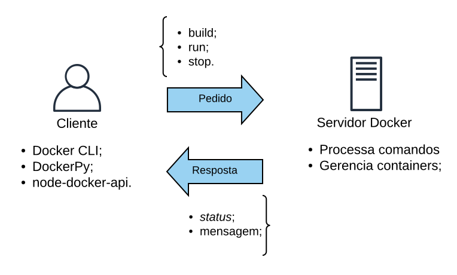
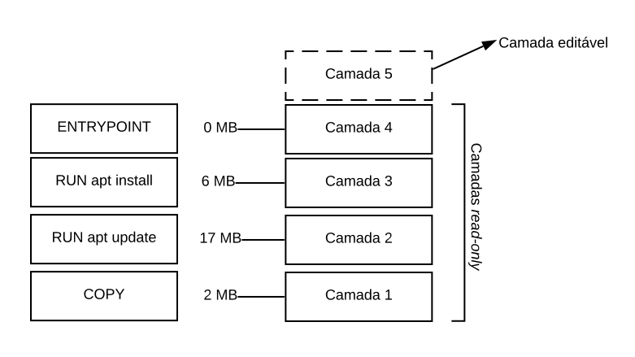
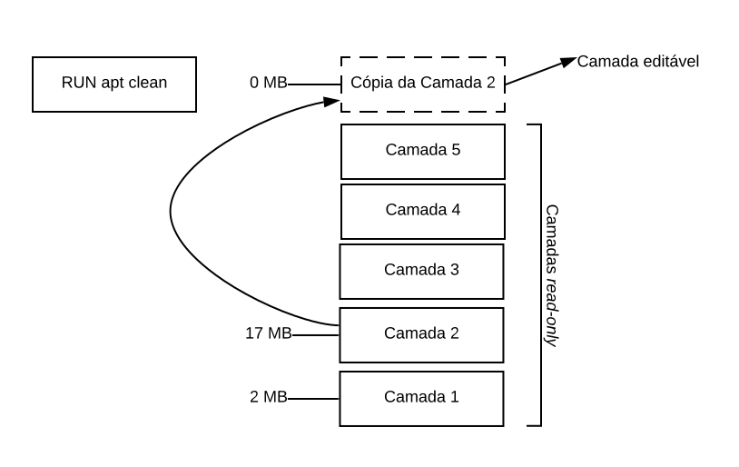
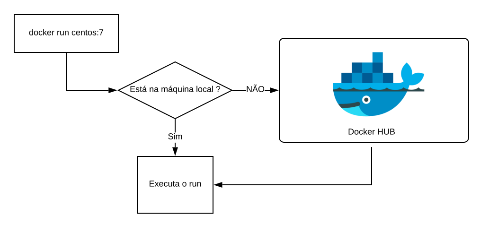

2 Docker 🐳
Docker é uma plataforma para o gerenciamento de containers (@Schommer2014), que ajuda desenvolvedores e administradores de sistemas a desenvolver, distribuir, implantar e executar aplicações em ambientes isolados, sem problemas com dependências do ambiente ou configurações através de Linux Containers (LXC) (@Schommer2014).
Ao utilizar o Docker, todos os problemas relacionados a instalação, configuração e solução de problemas relacionados a conflitos de dependências de um sistema são facilmente resolvidos. Atualmente o Docker vem sendo aplamente utilizado por sua facilidade de uso e baixa utilização de recursos computacionais para a implantação de sistemas e execução de algoritmos.
Todo o funcionamento do Docker é baseado em uma comunicação cliente-servidor, onde o cliente, através de uma API Rest envia comandos para o docker-daemon, que por sua vez representa o gerenciador de containers que realiza todas as operações e verificações necessárias para o funcionamento correto e simples do Docker. Esta estrutura é resumida na Figura abaixo.

A forma como fazemos a utilização da estrutura acima pode variar, já que se trata de uma API Rest, básicamente, qualquer linguagem de programação que suporte a comunicação através de protocolos de rede como HTTP conseguem se comunicar e interagir com o docker-daemon. Veja a Figura abaixo.

Na Figura acima é possível entender como o processo de comunicação e interação com o docker-daemon funciona. O Cliente envia comandos através da API Rest, sendo que para esta já existem diversas ferramentas que consomem e facilitam o processo, como é o caso do próprio Docker CLI, que é uma ferramenta de linha de comando distribuida nas instalações padrão do Docker. O Servidor recebe as requisições e faz os tratamentos e operações equivalentes aos pedidos.
Este tipo de estrutura permite que, através de uma máquina seja feito o gerenciamento de vários servidores Docker, sem contar que, por ser uma API Rest, aplicações podem fazer interações com o servidor, o que facilita ainda mais a criação e disponibilização de ferramentas para o gerenciamento de containers através do Docker.
O ambiente do Docker, que como citado, é gerenciado pelo docker-daemon é constituido por três componentes principais (@Chung2016), sendo eles, Docker images e Dockerfiles, Docker registry e Docker containers. Cada um desses explicados nas subseções seguintes.
2.1 Instalação
Agora com a visão geral de funcionamento do Docker, vamos fazer a instalação dele para começarmos a fazer sua utilização e entender os conceitos na prática! Por uma questão de facilidade, recomenda-se a utilização de um ambiente Linux.
Os passos abaixo, apresentam a instalação do Docker no Linux Ubuntu (16.04 ou superior).
$ curl -fsSL https://get.docker.com -o get-docker.sh
$ sudo sh get-docker.shCaso você queira permitir a execução do Docker para usuários que não sejam root você pode executar o comando abaixo
$ sudo usermod -aG docker seu-usuarioCaso você não execute o comando de permissão acima, todos os seus comandos do Docker deverão ser executados pelo root ou junto ao comando
sudo.
Feito! A instalação do Docker já está pronta e funcionando na sua máquina, para testar execute o comando docker -v, o retorno deve ser algo parecido com isto
Docker version 18.09.7, build 2d0083dO comando docker e todos os seus parâmetros representam a ferramenta Docker CLI, que foi citada anteriormente e já vem instalada na distribuição padrão do Docker.
Se você estiver utilizado uma outra plataforma que não a apresentada acima, você pode consultar o site do Docker (https://docs.docker.com/install/) para verificar como prosseguir com a instalação.
2.2 Containers
Containers são instâncias de Imagens Docker que estão sendo executadas em ambientes isolados, sendo que, nestes ambientes há todos os recursos necessários para a execução dos processos os quais foram definidos para os containers. Por exemplo, quando você quiser executar um container com o Postgres, ao realizar a execução, dentro do container já estará todas as bibliotecas necessárias para a execução do Postgres, inclusive os binários do banco propriamente dito.
2.3 Imagens de containers
Como citado anteriormente, um container representa uma imagem Docker que está sendo executada. As imagens Docker, por sua vez, representam arquivos executáveis que possuem todo o descritivo de arquivos e execuções que devem ser feitos no momento em que a imagem é executada e passa a ser um container.
Com isto as imagens Docker é garantido que, todos os containers gerados através da mesma imagem sejam padronizados, tendo uma mesma estrutura.
2.3.1 Criando imagens
A criação de imagens Docker é feita através da utilização de arquivos Dockerfiles, estes que descrevem qual será a estrutura das imagens e suas operações.
Dentro do Dockerfile existem diversas instruções para ditar cada caracteristica que deve ser empregada na imagem que está sendo gerada.
Para você entender melhor, vamos criar um exemplo de uma imagem Docker que gera um container que executa um script Python.
Vamos começar criando o script Python, fazemos isto utilizando o comando abaixo
echo "print('Oi! Esta é minha primeira imagem Docker! E ela funciona!')" > ola.pyCom o script criado, vamos criar um arquivo com o nome Dockerfile, dentro deste arquivo, vamos inserir o seguinte conteúdo. Não se preocupe se você não entender agora, cada uma das partes deste arquivo será explicada.
FROM python:3
COPY ola.py ./
CMD [ "./ola.py" ]
ENTRYPOINT [ "python" ]Ao finalizar a edição do arquivo, vá até o diretório onde o arquivo está criado, e execute o comando docker build.
docker build -t "minha_primeira_imagem:1.0" .Com este comando a sua imagem Docker será criada. Para verificar se ela realmente foi criada execute o comando docker images, que lista todas as imagens disponíveis para você utilizar. Ao digitar este comando você perceberá que há uma imagem com REPOSITORY de nome minha_primeira_imagem.
Para utilizar a imagem criada para gerar um container, vamos fazer a execução da imagem
docker run minha_primeira_imagem:1.0Caso queira apagar a imagem que criamos, utilize o comando
docker rmi(docker rmi minha_primeira_imagem:1.0)
2.3.1.1 Entendendo o Dockerfile
Anteriormente foi visto um simples Dockerfile, que criou uma imagem para a execução de um script Python, vamos analisa-lo para entender o que foi feito.
Inicialmente no arquivo foi importado uma imagem com nome python:3, isto é feito com o comando FROM. Ou seja, sua imagem foi criada com base em uma outra imagem, esta que já possuia o Python 3 instalado.
Após a definição da imagem base, foi feito uma cópia do script para dentro do container, através do comando COPY.
Por fim, os comandos CMD e ENTRYPOINT foram executados, e estes representam partes muito importantes de um Dockerfile, isto porque, normalmente um container é criado para executar um único processo, podendo este ser por exemplo, a inicialização de uma aplicação, ou a execução de um script , como fizemos.
A definição do processo que o container irá executar é feita através do comando ENTRYPOINT, ou seja, no nosso caso o processo principal será uma execução python, e o comando CMD faz o auxílio ao ENTRYPOINT já que, o CMD representam os parâmetros que serão passados para o ENTRYPOINY.
Existem muitas outras instruções que poderiam ser aplicadas neste Dockerfile, para saber mais sobre eles utilize a documentação do Docker (https://docs.docker.com/engine/reference/builder/).
2.3.1.2 Camadas de uma imagem
O Docker trabalha utilizando um conceito de camadas, onde cada modificação realizada por comandos do Dockerfile cria uma camada que não pode ser alterada, sendo possível alterar somente a última camada gerada.
É importante entender o conceitos de camadas para que, suas imagens não fiquem grandes e com arquivos desnecessários.
Durante os testes de geração de imagens, ao executar o comando docker buid, várias informações foram exibidas, cada uma daquelas informações representam as camadas que estavam sendo criadas na imagem gerada.
Para entendermos melhor como as camadas funcionam, vamos criar um pequeno exemplo. Veja o seguinte Dockerfile.
FROM ubuntu
RUN apt update -y
RUN apt install vim -y
ENTRYPOINT [ "bash" ]Ao executar o comando docker build com o Dockerfile acima, a seguinte estrutura de camadas será criada.

Veja que, para cada comando foi criado uma camada, que por sua vêz tem um peso. Das camadas 1 a 4 nada mais pode ser alterado. Porém há um pequeno problema, quando o comando apt update -y foi executado cache foi criado e certamente não vai mais ser utilizado. O problema é que este cache ficou em uma camada read-only e não poderá mais ser modificado. Se o comando para limpar o cache for utilizado, a camada onde o cache está será copiada para o topo e então editada.

Ou seja, mais uma camada foi criada, porém o cache ainda continua lá. Para resolve reste problema é preciso melhorar a forma como o Dockerfile foi criado, tentando executar tudo o que for possível em uma única camada, por exemplo.
FROM ubuntu
RUN apt update -y && apt install vim -y && apt clean
ENTRYPOINT [ "bash" ]Com o Dockerfile acima, somente três camadas serão criadas, já que, toda a modificação para a instalação do vim é feita em uma única camada, que tem o cache removido.
Com isto é possível perceber a necessidade de otimizar os
Dockerfilese evitar camadas desnecessárias que só ocupam espaço
Para saber mais formas de otimização de Dockerfiles, consulte a documentação do Docker (https://docs.docker.com/develop/develop-images/dockerfile_best-practices/).
2.3.2 Aquisição de imagens
Além da criação de imagens é possível fazer a aquisição de imagens já criadas pela comunidade, ou mesmo distribuída por algum instituto ou empresa com seus sistemas já configurados e prontos para a execução.
Para isso o Docker Registry pode ser utilizado, este que é um componente que está dentro da plataforma Docker e que facilita muito a sua utilização. Estes componentes podem ser públicos e disponível para todos, como o caso do Dockerhub ou privado, específico para empresas e institutos, por exemplo.
Por fazer parte da plataforma, o registry já está integrado ao funcionamento do docker-daemon. Vamos fazer alguns testes para entender. Utilize o comando docker images para listar as imagens que estão em sua máquina.
Você provavelmente só terá a imagem criada anteriormente (Isso se você não excluíu ela). Vamos então tentar executar uma imagem que não está na sua máquina.
docker run centos:7Mesmo você não tendo a imagem nomeada centos:7 em sua máquina o comando está sendo executado, isso porque o docker-daemon, por padrão, ao não encontrar em sua máquina verifica no registry público Docker hub e verifica se tem uma imagem com o nome que você inseriu, caso tenha ele baixa para dai executar o comando inserido. Veja a Figura.

Durante os passos da criação do Dockerfile essa feature foi utilizada, ao inserir a imagem de nome python:3 na instrução FROM do Dockerfile, o docker-daemon verifica se há a imagem na máquina, como não tinha ele baixou para então continuar a criação da imagem.
2.4 Arquitetura
Com todos os componentes já conhecidos, há a possibilidade da expansão da visão geral de toda a estrutura e funcionamento do Docker. Inicialmente haviamos definido somente a forma de comunicação entre o cliente-servidor, porém agora com todos os conceitos que já vimos, vamos olhar como todo o ambiente Docker está integrado, para isto veja a Figura abaixo.

É possível perceber toda a ligação entre cada um dos componentes apresentados até aqui.
Com isso estamos prontos para iniciar as atividades práticas com o Docker e o gerenciamento de containers.
2.5 Administrando containers
Esta seção apresenta exemplos para a administração de containers através da utilização do Docker CLI.
2.5.1 Criando containers
Vamos começar com exemplos das diferentes formas de criação de container. Começando com a criação básica de um container do Debian.
docker create debianDepois de criar, utilize o comando docker ps -a para listar todos os containers criados. Quando você listar, vai ver várias informações sobre o container criado, como por exemplo a imagem que ele utilizou, o ID, se há portas de rede abertas e o nome. Por padrão, não é necessário definir o nome do container, mas é recomendado que o faça, então vamos excluir o container criado e gerar um novo com um nome definido.
# Excluíndo container
docker rm ID_DO_CONTAINER_CRIADO
# Criando um novo container de nome exemplo_debian
docker create --name exemplo_debian debianAo listar novamente todos os containers você vai ver que lá está o novo container, com o nome que foi definido no comando anterior. O container ainda não está sendo executado, uma vez que definimos que ele deveria apenas ser criado, vamos então executar ele com o comando docker start.
docker start exemplo_debianEle foi executado, para listar somente os containers que estão sendo executados, utilize o comando docker ps, sem qualquer outro parâmetro.
Sua listagem estará vazia já que o container do Debian está configurado para executar o comando bash, então, ao iniciarmos o container ele executou o comando e em seguida finalizou, se quisermos manter o container ligado, devemos definir que ele terá um terminal interativo, para isto no momento da criação, os parâmetros -ti devem ser passados. Vamos lá então, excluir o que haviamos criado e gerar ele novamente com os novos parâmetros
# Excluíndo container exemplo_debian
docker rm exemplo_debian
# Gerando um novo container que trabalha em segundo plano
docker create -ti --name exemplo_debian debian
# Executando o novo container criado
docker start exemplo_debianAo executar os comandos o novo container já estará sendo executado, para verificar, liste novamente os containers em execução. Vamos agora acessar o container criado, para isto usamos o comando docker attach, que recupera o bash do container caso ele não esteja executando outro processo.
docker attach exemplo_debianEm outros cenários o
bashpode não estar disponível, então ao invês dodocker attachpode ser utilizado odocker exec(https://docs.docker.com/engine/reference/commandline/exec/)
Ao executar o comando, você já estará dentro do terminal do container criado. Como dito anteriormente, este ambiente é isolado de sua máquina, então faça testes, navegue entre os diretórios, para você ver que é uma instância completamente isolada. Para sair do terminal e não finalizar o container utilize os seguintes botões de seu teclado: CTRL + p + q. Ao listar novamente os containers em execução, lá estará ele sendo executado.
Nos exemplos anteriores criavamos o container depois faziamos sua execução, porém podemos já criar um container e imediatamente realizar sua inicialização, para isto utilizamos o comando docker run, que recebe os mesmos parâmetros que o docker create, com a diferença de que ele executa o container após sua criação.
docker run -ti --name exemplo_debian debianExecutando o comando acima, o container irá iniciar e você já estará em seu
bash.
2.5.2 Gerenciando as execuções de um container
Com os containers em execução, vamos entender quais são os estados de um container e como podemos fazer a manipulação desses.
Ao criar um container com docker create o status dele é CREATED e as modificações dessa estado são feitos com os comandos na Tabela abaixo, junto aos comandos, há os estados que eles geram no container.
| Comando | Estado gerado |
|---|---|
| docker create | CREATED |
| docker run | UP |
| docker start | UP |
| docker stop | EXITED |
| docker restart | UP |
| docker pause | UP (PAUSED) |
| docker unpause | UP |
Para entender cada um dos estados que estes comandos geram em um container vejamos a Tabela abaixo.
| Estado | Descrição |
|---|---|
| CREATED | Representa que o container foi criado, possui uma camada que pode ser escrita e está pronto para ser iniciado |
| UP | Indica que o container está em execução |
| UP (PAUSED) | Indica que o container está “ligado” porém sua execução está parada |
| EXITED | Indica que a execução do container foi finalizada |
Estes estados nos ajudam a entender o que está ocorrendo com os containers se estão trabalhando sem nenhum problema ou mesmo se estão ou não sendo executados.
2.5.3 Visualizando status do container
Além do estado do container, em certos casos é necessário avaliar outras informações do container, a Tabela abaixo descreve comandos que podem ser úteis para a avaliação e verificação dos containers.
| Comando | Descrição |
|---|---|
| docker stats | Exibe estatísticas de utilização de recursos feitas pelo container em tempo real |
| docker top | Exibe os processos que estão sendo executados no container |
| docker logs | Exibe os logs do container. A forma que os logs são exibidas depende da forma como o serviço que está sendo executado registrou os logs |
| docker inspect | Exibe informações gerais do container, no formato JSON |
2.5.4 Gerenciamento de memória e CPU
Durante as verificações de estado e utilização de um container, pode ser necessário atribuir para ele limites de utilização, isto para que o desempenho dos vários containers que estão sendo executados não seja prejudicado pela necessidade de uso de um único container.
Um container ao ser criado, quando não é atribuido para ele um limite de recusos, a quantidade consumida pode chegar até o limite da máquina onde ele está sendo executado.
Vamos começar criando um container normalmente, como haviamos feito até aqui.
docker run -ti --name debian_de_teste debianAgora, com a ajuda do comando docker inspect, vamos avaliar a quantidade de memória configurada para uso deste container.
docker inspect debian_de_teste | grep -i memoryA saída do comando acima é parecida com isto:
"Memory": 0,
"KernelMemory": 0,
"MemoryReservation": 0,
"MemorySwap": 0,
"MemorySwappiness": null,O campo Memory está com valor 0, isto indica que, para este container não há limitação de uso de memória, como citado anteriormente. Para resolver este problema, vamos excluir este container e gerar um novo com a limitação de memória.
# Excluíndo container sem limite de memória
# -f Para excluir mesmo se o container estiver com estado UP
docker rm -f debian_de_teste
# Criando container com limite de 512 MB
docker run -ti --name debian_de_teste --memory 512m debianApós os comandos, caso eu execute novamente o docker inspect será possível visualizar a mudança no limite de memória.
docker inspect debian_de_teste | grep -i memorySaída:
"Memory": 536870912,
"KernelMemory": 0,
"MemoryReservation": 0,
"MemorySwap": -1,
"MemorySwappiness": null,Com isso, o container não vai consumir mais que 512 MB da máquina onde está sendo executado. Outra cenário possível para a mudança de quantidade de memória é quando o container já está funcionando e você precisa mudar seu limite de memória. Isto pode ser feito através do comando docker update.
Vamos mudar a quantidade de memória do container de testes que geramos acima.
docker update --memory 256m debian_de_testeO comando
docker updatebásicamente recebe o parâmetro que precisa ser alterado, o novo valor e ocontainer idoucontainer namepara fazer a mudança.
Ao consultar novamente a quantidade de memória, veremos que ela foi atualizada para 256 MB
"Memory": 268435456,
"KernelMemory": 0,
"MemoryReservation": 0,
"MemorySwap": -1,
"MemorySwappiness": null,Além da memória pode ser necessário limitar a quantidade de CPU que o container pode utilizar. Todos os principios apresentados na mudança de memória podem ser aplicados aqui, ou seja, pode ser atribuido valores de limitação na criação ou em containers já em execução, o ponto para a CPU é que os valores atribuidos funcionam um pouco diferentes, vamos para a explicação.
Quando os valores de utilização de CPU vão ser atribuidos, é utilizado um conceito de proporção, vamos para um exemplo, neste três containers serão criados.
docker run -ti --name debian_1 --cpu-shares 1024 debian
docker run -ti --name debian_2 --cpu-shares 512 debian
docker run -ti --name debian_3 --cpu-shares 512 debianO parâmetro
--cpu-sharesé quem define os valores de utilização da CPU
Lembre-se que, para sair do container sem fecha-lo utilize as teclas
CTRL + p + q.
Após criar os três containers vamos entender o pensamento por trás da proporcionalidade. O primeiro container possui 1024 cpu-shares e os outros dois containers criados possuem 512 cpu-shares cada. O segundo e o terceiro container criados, tem cada um 50% do valor atribuido para o primeiro container.
Quando todos os valores atribuidos a cada container são somados, chegamos em um valor de 2048. Sobre este valor, se aplicarmos uma proporcionalidade, é possível entender que o primeiro container possui 50% do valor total e os outros dois 25% cada um. Estes valores da proporcionalidade, são exatamente as quantidades que cada um poderá utilizar do 100% total de utilização da CPU, assim, o primeiro poderá utilizar até 50%, enquanto os outros dois poderão utilizar até 25% cada um.
Lembrando que o comando
docker updatefunciona da mesma forma como apresentado no controle de memória, com a diferença de que o parâmetro inserido para este caso será o--cpu-shares.
2.5.5 Armazenamento
Para finalizar este conteúdo básico sobre Docker, vamos tratar de algumas formas de armazenamento possíveis nos containers. Existem três formas possíveis de armazenamento em um container, cada uma dessas formas é apresentada na Tabela abaixo.
| Tipo de armazenamento | Descrição |
|---|---|
| Volumes | São formas de armazenamento que ficam registradas em lugares específicos do sistema de arquivos da máquina que executa o Docker e todo seu controle é feito pelo docker-daemon |
| Bind mounts | Podem ser armazenados em qualquer lugar do sistema de arquivos da máquina que executa o Docker e o docker não faz seu gerenciamento |
| tmpfs | Sistema de arquivos temporários criados diretamente na memória e não são salvos |
A escolha dentre essas possibilidades pode variar de acordo com seu cenário de utilização. Não deixe de consultar a documentação do Docker para dicar e formas de utilização de cada uma dessas (https://docs.docker.com/storage/)
Cada uma dessas formas listadas na Tabela anterior, indicam formas de criar mapeamentos de unidades e arquivos entre o container e a máquina onde o docker-daemon está sendo executado. Veja a Figura abaixo.

Como é possível perceber na Figura acima, o mapeamento faz básicamente com que os arquivos ou diretórios do sistema de arquivos do container sejam armazenados em outros contextos que não o do próprio container, tendo como formas de mapeamento, os itens listados na Tabela acima.
Vamos focar aqui em apresentar os Volumes e os Bind mounts. Vamos começar criando um container que possui um volume.
docker run -ti -v /volume --name ubuntu_com_volume ubuntuAo executar o comando e estar dentro do container vá até o diretório raiz / e execute o comando ls, para listar os diretórios.
Na listagem você verá que há um diretório de nome volume, acesse ele e crie um arquivo qualquer.
cd /volume && > arquivo_qualquer.txtFeito isto, vamos sair do container e verificar em qual local do disco o volume foi criado.
Para sair do container não esqueca de utilizar o
CTRL + p + q, o que evita a finalização do processo principal do container.
Após sair vamos verificar onde o volume foi criado com o auxílio do comando docker inspect.
docker inspect -f {{.Mounts}} ubuntu_com_volumeO parâmetro
-fajuda na filtragem do comandodocker inspect.
A saída do comando é parecido com isto
[{volume 3af1c580d4679973c86fbe7b6cdc755595a726f41aec7c8c59186f10885732fa /var/lib/docker/volumes/3af1c580d4679973c86fbe7b6cdc755595a726f41aec7c8c59186f10885732fa/_data /volume local true }]Veja que, ele indica onde o diretório /volume que foi montado dentro do container está na máquina local. Vamos então acessar este diretório e verificar seu conteúdo.
cd /var/lib/docker/volumes/3af1c580d4679973c86fbe7b6cdc755595a726f41aec7c8c59186f10885732fa/_dataApós mudar o diretório e listar seu conteúdo, você provavelmente verá o arquivo que foi criado arquivo_qualquer.txt, isto ocorre já que, como foi explicado, os volumes permitem o mapeamento de arquivos e diretórios que estão presentes no sistema de arquivos do container.
Outra da forma de realizar o mesmo processo é fazendo a utilização de bind mounts que evita a criação de volumes e permite que o mapeamento seja feito diretamente entre um diretório/arquivo da máquina onde o docker-daemon é executado e um diretório/arquivo do container. Para vermos isto na prática, vamos excluir o container de testes que criamos anteriormente e gerar um novo contendo esta forma de mapeamento.
# Excluindo o container gerado anteriormente
docker rm -f ubuntu_com_volume
# Gerando container com bind mounts
mkdir /arquivos_containers
docker run -ti -v /arquivos_containers:/volume --name ubuntu_com_volume ubuntuAntes de criar o container foi necessário criar um diretório, isto porque este será vinculado diretamente com o
/volumeque está dentro do container, assim, todo o conteúdo que foi criado lá, estará sendo criado dentro deste diretório que foi gerado.
Dentro do container, vá até o diretório volume e crie um arquivo qualquer.
cd /volume && > arquivo_qualquer_2.txtAgora saida do container e liste o diretório /arquivos_containers, você vai perceber que o arquivo criado no container está lá.
Lembrando que, a forma que você escolher para mapear os dados pode depender completamente de seu contexto e sua necessidade.
Então, chegamos ao fim desta parte da documentação, tudo o que foi mostrado até é um guia básico de como realizar a utilização do Docker, não deixe de conferir a documentação no site oficial e também de fazer testes para ir aprendendo mais!